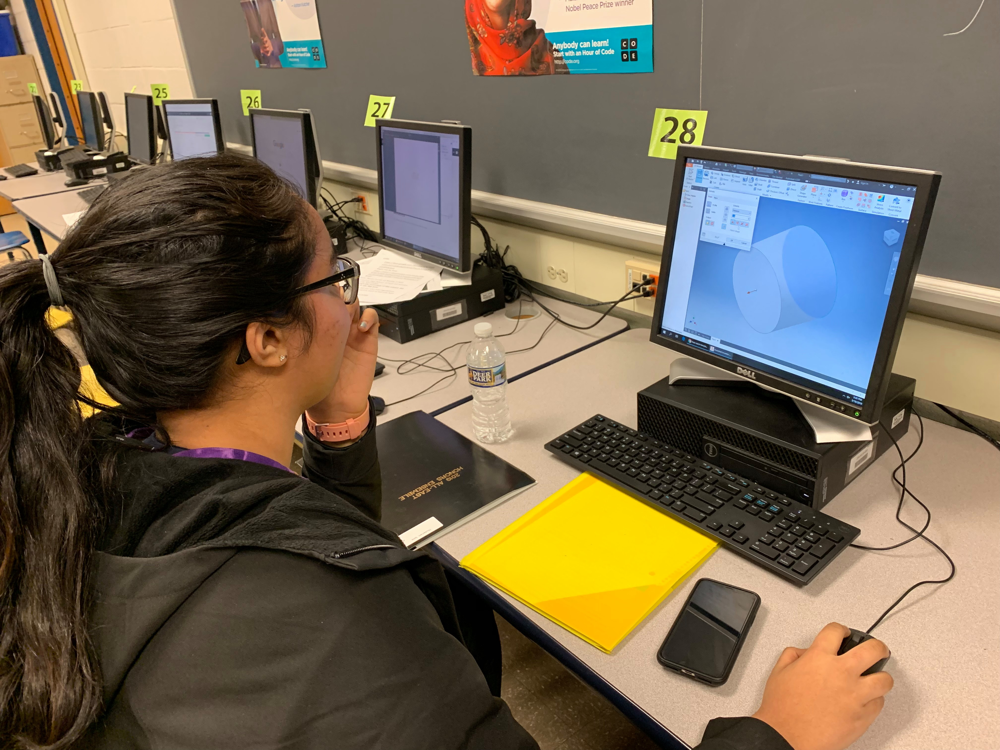
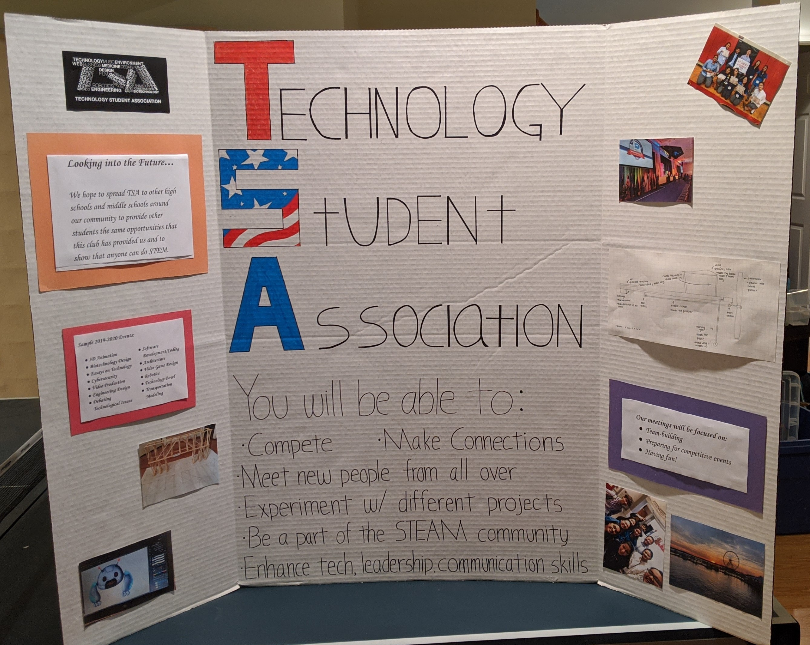
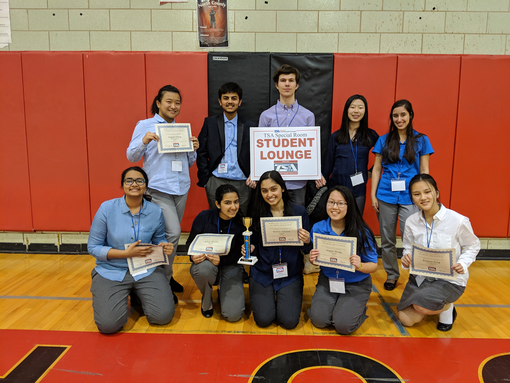

We try our best to schedule in a meeting every week so that our members are able to have an abundant amount of time to work on their projects. These meetings are typically every Friday during lunch in room 15 (which is in our school's basement). At the start of the meetings, we tend to go over important information about conferences, fundraisers, and plans for the upcoming weeks, while also reminding everyone to work on their projects. We make most of these meetings optional because we understand that students tend to use lunch time to ask other teachers for help in particular subjects, but we highly encourage them to attend the meetings because this will give them at least 30 minutes to work on the porjects during school, rather than having to complete it all at home.
Most of our recruiting happens at the beginning of the year during our school's club expo and freshman picnic. For the freshmen picnic, we had set up our poster (pictured on the right) on a table outside of the school. We interacted with many of the freshmen and explained to them why they should join TSA. For club expo, this event was open to all students at Wootton during lunch mid-September. We used the same poster in hopes of convincing more students to join TSA. However, just because students don't sign up during these two events doesn't mean that they can't be a member. We're always looking for new members and we're happy to welcome anyone anytime during the school year! This year, our chapter has 11 members, which is a slight increase from last year. With each upcoming year, our goal is to continue expanding membership and recognition of TSA in our school. If you know anyone at Wootton who is interested in joining TSA, please tell them to contact wootton.tsa@gmail.com.
We hope that in the upcoming years, we are able to spread TSA to other MCPS schools, ecspecially to both Robert Frost Middle School and Cabin John Middle School, in addition to increasing club participation at our own school. We want to provide other schools in our community the same opportunity that TSA provided us. Using TSA as a platform, we want to show other students that STEM is something that everyone can do and can enjoy doing.
